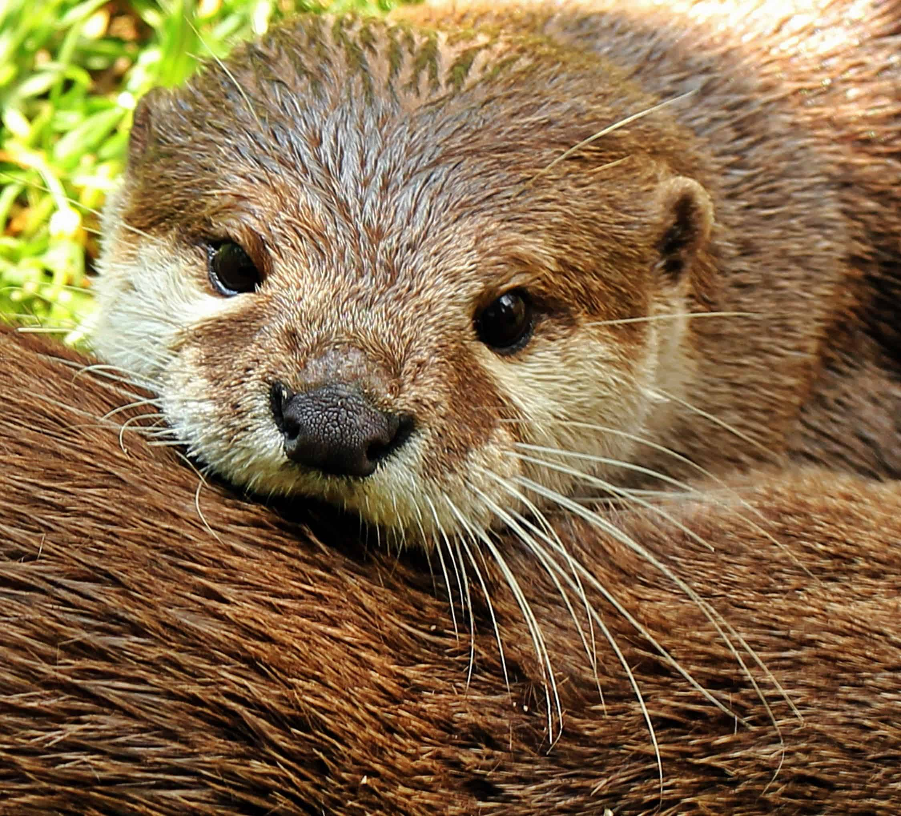

I love otters. I can't remember exactly where it started, but I remember that as a kid, my nana adopted one at the zoo and if I had to hazard a guess, that's where this love started.
I only just rediscovered this love for them recently, so, thank you, nana.
Things I love most about otters are: